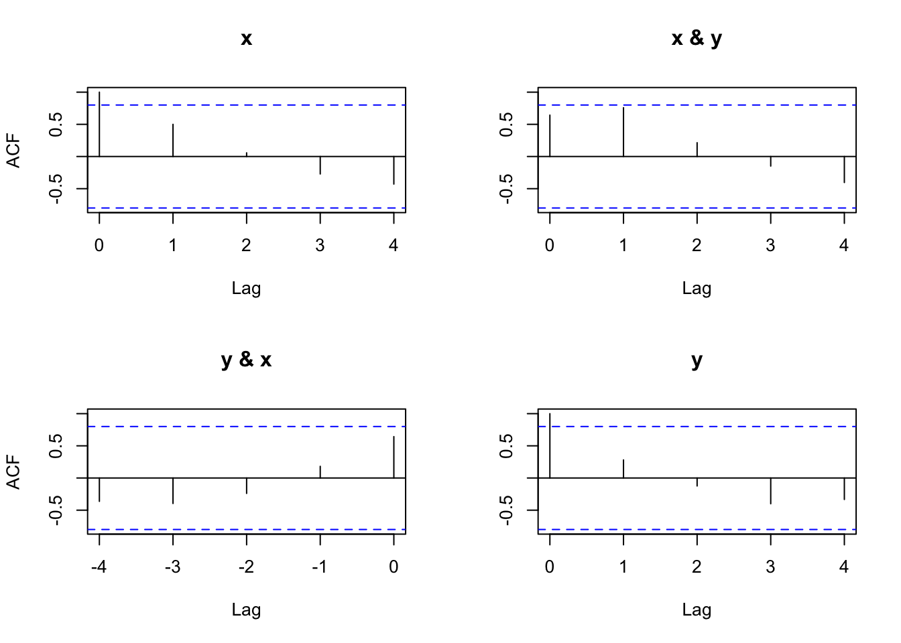

Chapter 21 Multiple Time Series
Our past work has focused primarily one variable for a time series. We examined ways to estimate dependence over time and use this dependence to construct statistical models. Now, we will extend this to multiple variables for a time series.
21.1 Cross-covariance function and Cross-correlation function
Measures like an ACF for one variable at a time will still be of interest. We can now also look at similar measures for two variables at a time. This can be especially helpful when one variable could be used to help predict the other.
Suppose there are two series denoted by xt and yt for t = 1, …, n. The cross-covariance function is
\(\gamma_{xy}(s,t)=Cov(x_s, y_t)=E[(x_s-\mu_{xs})(y_t-\mu_{yt})]=E(x_sy_t)-\mu_{xs}\mu_{yt}\)
where \(\mu_{xs}=E(x_s), \mu_{yt}=E(y_t)\)
The cross-correlation function is
\(\rho_{xy}(s,t)=\frac{\gamma_{xy}(s,t)}{\sqrt{\gamma_x(s,s)}\sqrt{\gamma_y(t,t)}}\)
where s and t denote two time points and the x and y subscripts help denote the particular series.
21.2 Stationarity
Stationarity can also be examined when two time series are of interest. To have two series, xt and yt, be jointly stationary in a weak manner:
- Both time series must have constant mean
- Both autocovariance functions must depend only on the lag difference
- The cross-covariance must depend only on the lag difference.
If two series are jointly stationary, then the following notation can be used:
\(\gamma_{xy}(h)=E[(x_{t+h}-\mu_x)(y_t-\mu_y)]\)
\(\rho_{xy}(h)=\frac{\gamma_{xy}(h)}{\sqrt{\gamma_x(0)}\sqrt{\gamma_y(0)}}\)
Notes:
- \(\gamma_{xy}(h) = \gamma_{yx}(-h)=E[(y_{t-h}-\mu_y)(x_t-\mu_x)]\)
- \(\gamma_{xy}(h)\)is not necessarily equal to \(\gamma_{yx}(h)=E[(y_{t+h}-\mu_y)(x_t-\mu_x)]\) (usually will be different).
- \(\gamma_{xy}(h)\) is not necessarily equal to \(\gamma_{xy}(-h)=E[(x_{t-h}-\mu_x)(y_t-\mu_y)]\) (usually will be different).
Example 21.1 This is an example from Shumway and Stoffer’s textbook.
Let \(x_t = w_t + w_{t-1}\) and \(y_t = w_t - w_{t-1}\) where \(w_t \sim ind.(0, \sigma_w^2)\) for t = 1, …, n. This example was presented earlier when \(x_t\) and \(y_t\) were shown to be weakly stationary. Now, we are going to show \(x_t\) and \(y_t\) are weakly stationary in a joint manner.
\(\gamma_{xy}(s,t)=E[(w_s+w_{s-1})(w_t-w_{t-1})]=E[w_sw_t+w_{s-1}w_t-w_sw_{t-1}-w_{s-1}w_{t-1}]\)
If s=t, then
\(\gamma_{xy}(t,t)=E[w_tw_t+w_{t-1}w_t-w_tw_{t-1}-w_{t-1}w_{t-1}]\\ =E[w_t^2]-E[w_{t-1}^2]\\=Var(w_t)+E[w_t]^2-Var(w_{t-1})-E[w_{t-1}]^2\\=\sigma_w^2+0-\sigma_w^2-0\\=0\)
If s=t-1, then
\(\gamma_{xy}(t-1,t)=E[w_{t-1}w_t+w_{t-2}w_t-w_{t-1}w_{t-1}-w_{t-2}w_{t-1}]\\=-E[w_{t-1}^2]=-\sigma_w^2\)
If s=t+1, then
\(\gamma_{xy}(t+1,t)=E[w_{t+1}w_t+w_tw_t-w_{t+1}w_{t-1}-w_tw_{t-1}]\\=E[w_t^2]=\sigma_w^2\)
If |s-t|>1, then \(\gamma_{xy}(s,t)=0\)
Therefore, \(\gamma_{xy}(h)=\begin{cases}0 & \text{for } h=0 \\ \sigma_w^2 & \text{for } h=1 \\ -\sigma_w^2 & \text{for } h=-1 \\ 0 & \text{for } |h|>1 \end{cases}\)
Thus, \(x_t\) and \(y_t\) are jointly stationary in a weak manner.
Example 21.2 \((1-\phi_1B)x_t=w_t\) where \(w_t\sim ind(0,\sigma_w^2)\) for t =1,.., n and \(|\phi_1|<1\)
This example was presented earlier when \(x_t\) and \(w_t\) were shown to be weakly stationary. Now, we are going to show \(x_t\) and \(w_t\) are jointly stationary.
Note that the sum of an infinite series is
\(\sum_{i=0}^{\infty}a^i=\frac{1}{1-a}\) for |a|<1
The time series can be rewritten as
\(x_t=\frac{1}{1-\phi_1B}w_t=w_t(1+\phi_1B+\phi_1^2B^2+...)=w_t+\phi_1w_{t-1}+\phi_1^2w_{t-2}+...\)
The cross-covariance function is \(\gamma_{xw}(h)=E[(x_{t+h}-\mu_{x,t+h})(w_t-\mu_{wt})]\)
Remember that \(\mu_{wt} = E(w_t) = 0\) and \(\mu_{x,t+h} =E(x_{t+h}) = 0\). Then
\(\gamma_{xw}(h) = E[x_{t+h}w_t]\\= E[(w_{t+h}+\phi_1w_{t+h-1}+\phi_1^2w_{t+h-2}+...)w_t]\\=E[w_tw_{t+h}+\phi_1w_tw_{t+h-1}+\phi_1^2w_tw_{t+h-2}+...]\)
Because the \(w_t\)’s are independent with mean 0, we only need to be concerned about when the subscripts of the \(w_t\) pairs match.
\(\gamma_{xw}(0)=E[w_tw_{t+0}+\phi_1w_tw_{t+0-1}+\phi_1^2w_tw_{t+0-2}+...]\\=E[w_t^2]+\phi_1E[w_tw_{t-1}]+\phi_1^2E[w_tw_{t-2}]+...\\=E[w_t^2]+0+0+...\\=\sigma_w^2\)
\(\gamma_{xw}(1)=E[w_tw_{t+1}+\phi_1w_tw_{t+1-1}+\phi_1^2w_tw_{t+1-2}+...]\\=E[w_tw_{t+1}]+\phi_1E[w_t^2]+\phi_1^2E[w_tw_{t-1}]+...\\=0+\phi_1E[w_t^2]+0+...\\=\phi_1\sigma_w^2\)
\(\gamma_{xw}(-1)=E[w_tw_{t-1}+\phi_1w_tw_{t-1-1}+\phi_1^2w_tw_{t-1-2}+...]\\=E[w_tw_{t-1}]+\phi_1E[w_tw_{t-2}]+\phi_1^2E[w_tw_{t-3}]+...\\=0+0+0+...\\=0\)
In general, \(\gamma_{xw}(h)=\phi_1^h\sigma_w^2\) for \(h\ge 0\) and \(\gamma_{xw}(h)=0\) for \(h< 0\)
The h < 0 partshould make intuitive sense because of the model. For example, \(x_{t-1}\) comes from \(w_{t-1}, w_{t-2}, ….,\) but not from \(w_t\).
Therefore, \(x_t\) and \(w_t\) are jointly stationary.
21.3 Estimation
The sample cross-covariance function is
\(\hat \gamma_{xy}(h)=\frac1n\sum_{t=1}^{n-h}(x_{t+h}-\bar x)(y_t-\bar y)\)
Note that \(\hat \gamma_{xy}(h)=\hat \gamma_{yx}(-h)\); however, \(\hat \gamma_{xy}(h)\) is not necessarily equal to \(\hat \gamma_{yx}(h)\) and \(\hat \gamma_{xy}(h)\) is not necessarily equal to \(\hat \gamma_{xy}(-h)\).
The sample cross-correlation function is
\(\hat \rho_{xy}(h)=\frac{\hat \gamma_{xy}(h)}{\sqrt{\hat \gamma_x(0)}\sqrt{\hat \gamma_y(0)}}\)
The sampling distribution for \(\hat \rho_{xy}(h)\) is approximately normal with mean 0 and standard deviation of \(\sigma_{\hat \rho_{xy}}=\frac{1}{\sqrt{n}}\) if the sample size is large and at least one of the series is white noise.
For a hypothesis test, we can check if \(\hat \rho_{xy}(h)\) is within the bounds of \(0\pm Z_{1-\alpha/2}/\sqrt{n}\) or not. If it is not, then there is sufficient evidence to conclude that \(\rho_{xy}(h) \ne 0\).
Example 21.3 Simple CCF example (simple_CCF_exampleV2.R)
The Excel file shows how some of the “by-hand” calculations of the cross-covariance function can be done. Below is part of the resulting spreadsheet.
| h=0 | h=1 | |||
|---|---|---|---|---|
| t | \(x_t\) | \(y_t\) | \((x_t-\bar x)(y_t-\bar y)\) | \((x_{t+1}-\bar x)(y_t-\bar y)\) |
| 1 | 1 | 2 | 6.667 | 4.000 |
| 2 | 2 | 3 | 2.500 | 0.833 |
| 3 | 3 | 5 | -0.167 | 0.167 |
| 4 | 4 | 6 | 0.667 | 2.000 |
| 5 | 5 | 8 | 5.000 | 8.333 |
| 6 | 6 | 4 | -1.667 | No \(x_7\) |
| Mean/Sum | 3.5(mean) | 5.5(mean) | 13.00(sum) | 15.33(sum) |
The estimated cross-covariance function is
\(\hat \gamma_{xy}(h)=\frac1n\sum_{t=1}^{n-h}(x_{t+h}-\bar x)(y_t-\bar y)\)
Then
\(\hat \gamma_{xy}(0)=\frac16\sum_{t=1}^{6}(x_t-\bar x)(y_t-\bar y)=\frac16\times 13.00=2.167\)
\(\hat \gamma_{xy}(1)=\frac16\sum_{t=1}^{5}(x_{t+1}-\bar x)(y_t-\bar y)=\frac16\times 15.33=2.556\)
The cross-correlation function is \(\hat \rho_{xy}(h)=\frac{\hat \gamma_{xy}(h)}{\sqrt{\hat \gamma_x(0)}\sqrt{\hat \gamma_y(0)}}\)
Then
\(\hat \rho_{xy}(0)=\frac{\hat \gamma_{xy}(0)}{\sqrt{\hat \gamma_x(0)}\sqrt{\hat \gamma_y(0)}}=\frac{2.167}{\sqrt{2.92}\sqrt{3.89}}=0.643\)
\(\hat \rho_{xy}(1)=\frac{\hat \gamma_{xy}(1)}{\sqrt{\hat \gamma_x(0)}\sqrt{\hat \gamma_y(0)}}=\frac{2.556}{\sqrt{2.92}\sqrt{3.89}}=0.758\)
where \(\hat \gamma_x(0)\) and \(\hat \gamma_y(0)\) were found in R.
Below is the R code and output:
x <- c(1,2,3,4,5,6)
y <- c(2,3,5,6,8,4)
gamma.x <- acf(x = x, type = "covariance", plot = FALSE)
gamma.x##
## Autocovariances of series 'x', by lag
##
## 0 1 2 3 4 5
## 2.917 1.458 0.167 -0.792 -1.250 -1.042- \(\hat \gamma_x(0)=2.917\)
gamma.y <- acf(x = y, type = "covariance", plot = FALSE)
gamma.y##
## Autocovariances of series 'y', by lag
##
## 0 1 2 3 4 5
## 3.889 1.093 -0.481 -1.556 -1.296 0.296# Covariance - Match with Excel file
x.y.cov <- acf(x = cbind(x,y), type = "covariance")x.y.cov##
## Autocovariances of series 'cbind(x, y)', by lag
##
## , , x
##
## x y
## 2.9166667 ( 0) 2.1666667 ( 0)
## 1.4583333 ( 1) 0.6111111 (-1)
## 0.1666667 ( 2) -0.8055556 (-2)
## -0.7916667 ( 3) -1.3333333 (-3)
## -1.2500000 ( 4) -1.2222222 (-4)
##
## , , y
##
## x y
## 2.1666667 ( 0) 3.8888889 ( 0)
## 2.5555556 ( 1) 1.0925926 ( 1)
## 0.7222222 ( 2) -0.4814815 ( 2)
## -0.5000000 ( 3) -1.5555556 ( 3)
## -1.3611111 ( 4) -1.2962963 ( 4)\(\hat \gamma_{xy}(-1)=0.61\)
\(\hat \gamma_{yx}(-1)=2.56=\hat \gamma_{xy}(1)\)
The output labeling can be confusing. One way to remember what is being displayed is to always think of “x” as coming first with respect to our notation.
# Correlation
x.y.acf <- acf(x = cbind(x,y), type = "correlation")
x.y.acf##
## Autocorrelations of series 'cbind(x, y)', by lag
##
## , , x
##
## x y
## 1.000 ( 0) 0.643 ( 0)
## 0.500 ( 1) 0.181 (-1)
## 0.057 ( 2) -0.239 (-2)
## -0.271 ( 3) -0.396 (-3)
## -0.429 ( 4) -0.363 (-4)
##
## , , y
##
## x y
## 0.643 ( 0) 1.000 ( 0)
## 0.759 ( 1) 0.281 ( 1)
## 0.214 ( 2) -0.124 ( 2)
## -0.148 ( 3) -0.400 ( 3)
## -0.404 ( 4) -0.333 ( 4)\(\hat \rho_{xy}(-1)=0.181\)
\(\hat \rho_{xy}(1)=0.759\)
The (1,2) and (2,1) plots are in the opposite order from what was given in the displayed output.
x.y.ccf <- ccf(x = x, y = y, type = "correlation")x.y.ccf##
## Autocorrelations of series 'X', by lag
##
## -4 -3 -2 -1 0 1 2 3 4
## -0.363 -0.396 -0.239 0.181 0.643 0.759 0.214 -0.148 -0.404\(\hat \rho_{xy}(1)=0.759\)
\(\hat \rho_{xy}(-1)=0.181\)
Example 21.4 El Nino and fish population (ElNino.R)
This is an example from Shumway and Stoffer’s textbook involving two variables:
- Southern Oscillation Index (SOI; \(x_t\)) – Measurement of air pressure in central Pacific Ocean (helps to determine if El Nino effect is present)
- Recruitment (\(y_t\)) – Number of new fish
There are 453 months of observations. The data are available in the soi and rec objects of the authors’ package.
library(astsa)
#option(width=60)
class(soi)## [1] "ts"class(rec)## [1] "ts"window(x = soi, start = 1960, end = 1960.99)## Jan Feb Mar Apr May Jun Jul Aug Sep Oct
## 1960 0.169 0.432 0.202 -0.366 -0.661 0.093 -0.716 0.148 -0.093 0.279
## Nov Dec
## 1960 0.432 -0.104window(x = rec, start = 1980, end = 1981)## Jan Feb Mar Apr May Jun Jul Aug
## 1980 99.46000 99.37000 99.51999 96.64000 89.55000 68.67000 65.02000 61.82000
## 1981 74.11000
## Sep Oct Nov Dec
## 1980 76.92000 80.17000 77.48001 82.34000
## 1981plot(x = soi, ylab = "SOI", xlab = "t", type = "o")
grid(col = "gray", lty = "dotted") # Puts grid lines in correct location
# can't use panel.first here plot(x = rec, ylab = "Recruitment", xlab = "t", type =
"o")
grid(col = "gray", lty = "dotted") soi.rec.acf <- acf(x = cbind(soi,rec), type =
"correlation", lag.max = 50)soi.rec.acf##
## Autocorrelations of series 'cbind(soi, rec)', by lag
##
## , , soi
##
## soi rec
## 1.000 ( 0.0000) 0.025 ( 0.0000)
## 0.604 ( 0.0833) 0.011 (-0.0833)
## 0.374 ( 0.1667) -0.042 (-0.1667)
## 0.214 ( 0.2500) -0.146 (-0.2500)
## 0.050 ( 0.3333) -0.297 (-0.3333)
## -0.107 ( 0.4167) -0.527 (-0.4167)
## -0.187 ( 0.5000) -0.599 (-0.5000)
## -0.175 ( 0.5833) -0.598 (-0.5833)
## -0.096 ( 0.6667) -0.560 (-0.6667)
## 0.049 ( 0.7500) -0.476 (-0.7500)
## 0.222 ( 0.8333) -0.369 (-0.8333)
## 0.362 ( 0.9167) -0.267 (-0.9167)
## 0.407 ( 1.0000) -0.175 (-1.0000)
## 0.311 ( 1.0833) -0.103 (-1.0833)
## 0.104 ( 1.1667) -0.076 (-1.1667)
## -0.059 ( 1.2500) -0.092 (-1.2500)
## -0.175 ( 1.3333) -0.149 (-1.3333)
## -0.293 ( 1.4167) -0.222 (-1.4167)
## -0.369 ( 1.5000) -0.253 (-1.5000)
## -0.321 ( 1.5833) -0.198 (-1.5833)
## -0.194 ( 1.6667) -0.108 (-1.6667)
## -0.039 ( 1.7500) 0.000 (-1.7500)
## 0.146 ( 1.8333) 0.125 (-1.8333)
## 0.307 ( 1.9167) 0.235 (-1.9167)
## 0.347 ( 2.0000) 0.304 (-2.0000)
## 0.254 ( 2.0833) 0.332 (-2.0833)
## 0.095 ( 2.1667) 0.308 (-2.1667)
## -0.032 ( 2.2500) 0.232 (-2.2500)
## -0.158 ( 2.3333) 0.120 (-2.3333)
## -0.277 ( 2.4167) -0.021 (-2.4167)
## -0.370 ( 2.5000) -0.113 (-2.5000)
## -0.317 ( 2.5833) -0.116 (-2.5833)
## -0.162 ( 2.6667) -0.084 (-2.6667)
## -0.016 ( 2.7500) -0.031 (-2.7500)
## 0.172 ( 2.8333) 0.043 (-2.8333)
## 0.335 ( 2.9167) 0.110 (-2.9167)
## 0.389 ( 3.0000) 0.168 (-3.0000)
## 0.301 ( 3.0833) 0.191 (-3.0833)
## 0.161 ( 3.1667) 0.162 (-3.1667)
## -0.003 ( 3.2500) 0.079 (-3.2500)
## -0.134 ( 3.3333) -0.037 (-3.3333)
## -0.241 ( 3.4167) -0.154 (-3.4167)
## -0.273 ( 3.5000) -0.210 (-3.5000)
## -0.252 ( 3.5833) -0.206 (-3.5833)
## -0.130 ( 3.6667) -0.155 (-3.6667)
## 0.058 ( 3.7500) -0.090 (-3.7500)
## 0.214 ( 3.8333) -0.010 (-3.8333)
## 0.376 ( 3.9167) 0.064 (-3.9167)
## 0.404 ( 4.0000) 0.135 (-4.0000)
## 0.325 ( 4.0833) 0.164 (-4.0833)
## 0.195 ( 4.1667) 0.143 (-4.1667)
##
## , , rec
##
## soi rec
## 0.025 ( 0.0000) 1.000 ( 0.0000)
## -0.013 ( 0.0833) 0.922 ( 0.0833)
## -0.086 ( 0.1667) 0.783 ( 0.1667)
## -0.154 ( 0.2500) 0.627 ( 0.2500)
## -0.228 ( 0.3333) 0.477 ( 0.3333)
## -0.259 ( 0.4167) 0.355 ( 0.4167)
## -0.232 ( 0.5000) 0.259 ( 0.5000)
## -0.144 ( 0.5833) 0.182 ( 0.5833)
## -0.017 ( 0.6667) 0.127 ( 0.6667)
## 0.094 ( 0.7500) 0.094 ( 0.7500)
## 0.154 ( 0.8333) 0.074 ( 0.8333)
## 0.174 ( 0.9167) 0.057 ( 0.9167)
## 0.162 ( 1.0000) 0.024 ( 1.0000)
## 0.118 ( 1.0833) -0.037 ( 1.0833)
## 0.043 ( 1.1667) -0.116 ( 1.1667)
## -0.057 ( 1.2500) -0.188 ( 1.2500)
## -0.129 ( 1.3333) -0.240 ( 1.3333)
## -0.156 ( 1.4167) -0.267 ( 1.4167)
## -0.131 ( 1.5000) -0.268 ( 1.5000)
## -0.049 ( 1.5833) -0.241 ( 1.5833)
## 0.060 ( 1.6667) -0.185 ( 1.6667)
## 0.147 ( 1.7500) -0.110 ( 1.7500)
## 0.184 ( 1.8333) -0.033 ( 1.8333)
## 0.206 ( 1.9167) 0.030 ( 1.9167)
## 0.197 ( 2.0000) 0.064 ( 2.0000)
## 0.149 ( 2.0833) 0.057 ( 2.0833)
## 0.049 ( 2.1667) 0.021 ( 2.1667)
## -0.057 ( 2.2500) -0.018 ( 2.2500)
## -0.147 ( 2.3333) -0.059 ( 2.3333)
## -0.209 ( 2.4167) -0.093 ( 2.4167)
## -0.221 ( 2.5000) -0.118 ( 2.5000)
## -0.168 ( 2.5833) -0.125 ( 2.5833)
## -0.075 ( 2.6667) -0.106 ( 2.6667)
## 0.010 ( 2.7500) -0.054 ( 2.7500)
## 0.076 ( 2.8333) 0.020 ( 2.8333)
## 0.090 ( 2.9167) 0.085 ( 2.9167)
## 0.061 ( 3.0000) 0.116 ( 3.0000)
## -0.002 ( 3.0833) 0.103 ( 3.0833)
## -0.084 ( 3.1667) 0.058 ( 3.1667)
## -0.172 ( 3.2500) 0.010 ( 3.2500)
## -0.240 ( 3.3333) -0.020 ( 3.3333)
## -0.264 ( 3.4167) -0.033 ( 3.4167)
## -0.254 ( 3.5000) -0.033 ( 3.5000)
## -0.190 ( 3.5833) -0.020 ( 3.5833)
## -0.094 ( 3.6667) 0.011 ( 3.6667)
## 0.001 ( 3.7500) 0.059 ( 3.7500)
## 0.076 ( 3.8333) 0.117 ( 3.8333)
## 0.112 ( 3.9167) 0.174 ( 3.9167)
## 0.108 ( 4.0000) 0.205 ( 4.0000)
## 0.046 ( 4.0833) 0.199 ( 4.0833)
## -0.028 ( 4.1667) 0.166 ( 4.1667)The tick marks on the x-axis represent years. There are still 50 lags on the x-axis.
ccf(x = soi, y = rec, type = "correlation", lag = 50)
Examine the strength of association for the two series individually and together.
21.4 Vector time series
Because many different time series often occur at the same time, it is useful to consider a vector of time series data.
Let \(\boldsymbol x_t=\begin{bmatrix}x_{t1}\\x_{t2}\\ \vdots \\ x_{tp} \end{bmatrix}\) be a vector time series. Note that this could also be represented as a transpose: \(\boldsymbol x_t=(x_{t1},x_{t2},...,x_{tp})'\)
A vector is represented as a bold letter. Note that \(x_{t1}\) represents the first time series variable at time t, …, \(x_{tp}\) represents the pth time series variable at time t.
For the jointly stationary case,
- \(\mu = E(\boldsymbol x_t)\) where \(\boldsymbol \mu = (\mu_{t1}, \mu_{t2}, …, \mu_{tp})'\) is the mean vector
- \(\boldsymbol \Gamma(h) = E[(\boldsymbol x_{t+h} - \boldsymbol \mu)(\boldsymbol x_t - \boldsymbol\mu)']\) is the autocovariance matrix
The autocovariance matrix is similar to the covariance matrix discussed in other statistics courses. Elements of this matrix are
\(\boldsymbol \Gamma(h)=\begin{bmatrix} \gamma_{11}(h) & \gamma_{12}(h) & \dots & \gamma_{1p}(h)\\ \gamma_{21}(h) & \gamma_{22}(h) & \dots & \gamma_{2p}(h) \\ \vdots & \vdots & \ddots & \vdots\\ \gamma_{p1}(h) & \gamma_{p2}(h) & \dots & \gamma_{pp}(h) \end{bmatrix}\)
where \(\gamma_{ij}(h)=E[(x_{t+h,i}-\mu_i)(x_{tj}-\mu_j)]\)
Notes:
- For example, \(\gamma_{12}(h) = Cov(x_{t+h,1}, x_{t,2})\)
- Remember that a covariance matrix is symmetric
- \(\boldsymbol \Gamma(-h) = \boldsymbol \Gamma(h)'\) since \(\gamma_{ij}(h) = \gamma_{ji}(-h)\)
Sample auto covariance matrix:
\(\boldsymbol{\hat \Gamma}(h)=\frac1n\sum_{t=1}^{n-h}(\boldsymbol x_{t+h}-\boldsymbol{\bar x})(\boldsymbol x_t-\boldsymbol{\bar x})'\)
where \(\boldsymbol{\bar x}=\frac1n \sum_{t=1}^{n}\boldsymbol x_t\)
Notet that \(\boldsymbol{\hat \Gamma}(-h)=\boldsymbol{\hat \Gamma}(h)'\)
We are indexing a series of random variables by one value: time. A series of random variables can also be indexed by more than only one index. For example, this can happen in spatial statistics.